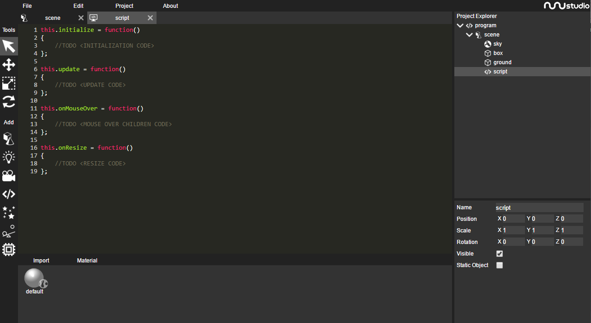
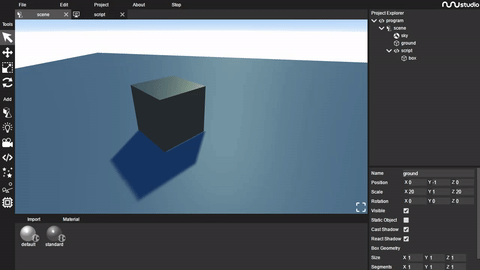

In nunuStudio scripts are written using the javascript language, javascript is the language used for developing web pages and its a easy language to learn, no programming knowledge is required for this tutorial. But I recommend that you learn the basics of programming in javascript before moving on to the next tutorial.
The script object is used to control objects inside a scene using javascript code, it can be found on the 4th category in the tool bar.
Scripts behave in the same way any other object does, they have a position, scale and rotations, they can have children and be used as a container.
After creating a script object its possible to open the script editor by double clicking the script object in the object explorer (right side). The script editor opens in a new tab. New scripts have a basic code template with spaces to write code commented.
Scripts have access to the following properties:
self - Used to access the script object properties (position, rotation, scale, children, etc).
program - Used to access the program instance, can be used to change the current scene, access resources (getMaterialByName, getTextureByName, etc).
scene - Used to acess the running scene properties.
Keyboard - provides access to keyboard input
Mouse - provides access to mouse input
In this tutorial we will be working only with the initialize and update methods.
Initialize - The initialize method is called when the scene is loaded, it is normally used to create new objects programmatically, get object from the scene, initialize variables, etc.
Update - The update method is called each frame before drawing the scene into the screen, it can be used to control object, get input values, change object attributes, etc.
To move an object we start by attaching that object as a children of the script object, we can do that by dragging the desired object to the script object, in this tutorial we will use the cube object on the default scene.
Lets start by testing the following code
this.initialize = function()
{
self.position.x += 2;
};This code will move the cube 2 points in the x axis when the program is started, but, after the object the object is moves it stays static.
To animate an object we can instead move our code to the update method, instead of playing with the object position lets try to change now the object rotation by testing the following code.
this.update = function()
{
self.rotation.y += 0.01;
};If everything works as expected you should see the following animation.
Its possible to use the keyboard and mouse to move objects around. This can be done using the Keyboard and Mouse objects inside scripts. The code bellow rotates an object in the y axis using the mouse delta, and moves the object aroud using keyboard arrow keys.
this.update = function()
{
self.rotation.y += Mouse.delta.x * 0.01;
if(Keyboard.keyPressed(Keyboard.LEFT))
{
self.position.x -= 0.1;
}
if(Keyboard.keyPressed(Keyboard.RIGHT))
{
self.position.x += 0.1;
}
};